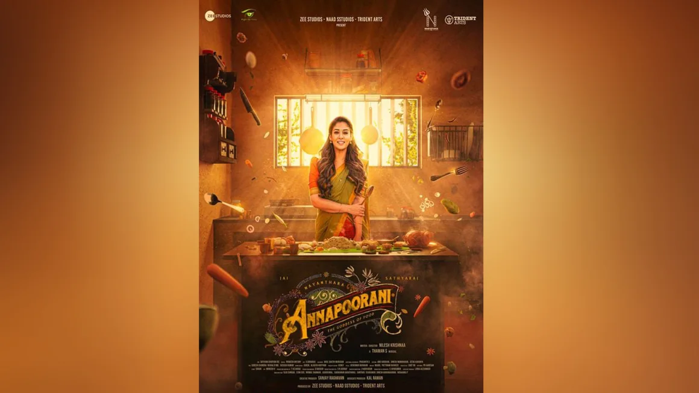

Netflix removes Indian movie about Brahmin chef cooking meat after backlash by right-wing Hindu groups
New Delhi (CNN) - Netflix has removed an Indian film from its platform after it sparked backlash and protest from right wing Hindu groups – the latest in several recent controversies where India’s entertainment industry has caved to religious pressure campaigns.
The film, ‘Annapoorani: the Goddess of Food’, follows a young woman’s journey to become the best chef in India – which included cooking and eating meat, despite protests from her family, members of Hinduism’s highest and traditionally vegetarian caste, the Brahmins.
The movie was released on Netflix on December 29, where it quickly became the streaming platform’s top trending movie in India, according to production studio Zee Entertainment. But less than two weeks later, the film vanished from the site, including its international platforms.
“We removed this film at the request of the licensor,” a Netflix spokesperson confirmed to CNN in a statement Tuesday.
CNN reached out to Zee Entertainment and the film’s director, but did not receive a response by the time of publication.
The film had come under fire from several far-right Hindu groups, with some filing a First Information Report (FIR) – which is required to start an official police investigation – against the film’s director, producer and actors.
The FIR was registered with police under the section “outraging religious feelings” and “promoting enmity between different groups,” according to a copy of the document reviewed by CNN.
India has various anti-hate speech laws designed to keep relations between different communities civil in a country with a long and bloody history of communal and inter-religious violence.
In recent years Hindu nationalist groups have been increasingly adept at using those laws, or the threat of an investigation, to protest and remove content from art and media deemed to be offensive.
Ramesh N Solanki, founder and president of the Hindu IT Cell, a group that vows to take legal action against any content “defaming” Hinduism, told CNN he wrote a complaint to police on January 6 alleging the film “is intentionally released to hurt Hindu sentiments.”
The main complaint was that the film showed the “daughter of a Brahmin man” eating meat and saying that the revered deity Lord Ram would eat meat, he said.
Shriraj Nair, a spokesperson for another group, Vishwa Hindu Parishad (VHP), said they had sent letters of complaint to both Netflix and Zee Entertainment on January 9, claiming the movie “hurt the religious sentiments of Hindus and Brahmins of India.”
Another VHP spokesperson claimed Zee Entertainment had issued an apology later that day, sharing an image of the letter on X, formerly Twitter. In the letter, the studio said it was coordinating with its co-producers to take action – including removing the film from Netflix “until (it is) edited.”
CNN cannot verify the authenticity of the letter and has asked Zee Entertainment for comment.
Censorship fears for streaming giants
India is a huge part of Netflix’s push into Asia, with the company pouring hundreds of millions of dollars into the market in recent years, and adding a Hindi option on its platform in 2020 to reach more Indian users.
But, as Netflix and other streaming platforms have found out, navigating India’s media landscape can be fraught, especially with deepening divides in recent years between the country’s religious groups.
In 2020, Netflix faced boycott calls in India over a scene in its series “A Suitable Boy,” depicting a young Hindu woman being kissed by a Muslim man at a Hindu temple. The complexity of inter-religious relationships in India is a core part of the seminal novel by Indian writer Vikram Seth that was adapted into the show.
But this kiss nonetheless angered many viewers, including members of the ruling Bharatiya Janata Party (BJP) – Prime Minister Narendra Modi’s Hindu nationalist party.
That incident, like the ongoing controversy over ‘Annapoorani,’ prompted a police complaint against Netflix executives.
A year later, Amazon’s new Prime Video series “Tandav” came under similar fire, with Indian politicians complaining to police and regulators over its depiction of some Hindu deities. Both Amazon and the show’s creators issued an apology.
These controversies have also heightened long-simmering fears among filmmakers and creators over censorship.
Indian filmmakers have faced censorship for decades, with reasons ranging from religious objections to accusations that plots are “obscene” or “immoral.”
Streaming content broke that mold because it was, until recently, unregulated by the government – but in 2020, authorities announced new rules to rein in streaming services and online content.
Those vaguely worded new rules have troubled filmmakers, pointing to a wide range of topics that have already been targeted with complaints and outrage.
There are similar fears of censorship and press freedoms among the media, with the government using emergency powers last January to ban the release of a documentary about Modi, and tax authorities searching the BBC’s offices in Delhi and Mumbai the following month.